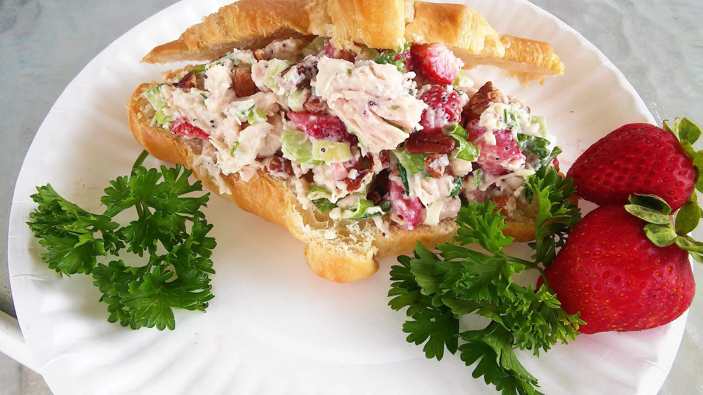

Chicken Salad Recipe

Strawberry Chicken Salad for Sandwiches
Strawberries and a coating of mayonnaise, lemon juice, and honey give this chicken salad a subtle tart-sweetness.
Celery
and pecans add crunch. Recipe contributor and Allrecipes Allstar Tammy Lynn suggests serving it on a croissant
or with
crackers.
Ingredients
- 1/2 cup mayonnaise
- 2 teaspoons lemon juice
- 1 teaspoon honey
- 2 teaspoons poppy seeds
- 2 cups of chopped, cooked chicken
- 3/4 cup sliced fresh strawberries
- 1/4 cup pecan pieces
- 1 stalk chopped celery
- 2 stalks green onions, chopped
- 2 tablespoons chopped fresh parsley
- salt and ground black pepper to taste
Directions
- Mix mayonnaise, lemon juice, honey, and poppy seeds together in a medium bowl.
- Add chicken, strawberries, pecans, celery, green onions, parsley.
- Toss to combine.
- Season with salt and pepper.